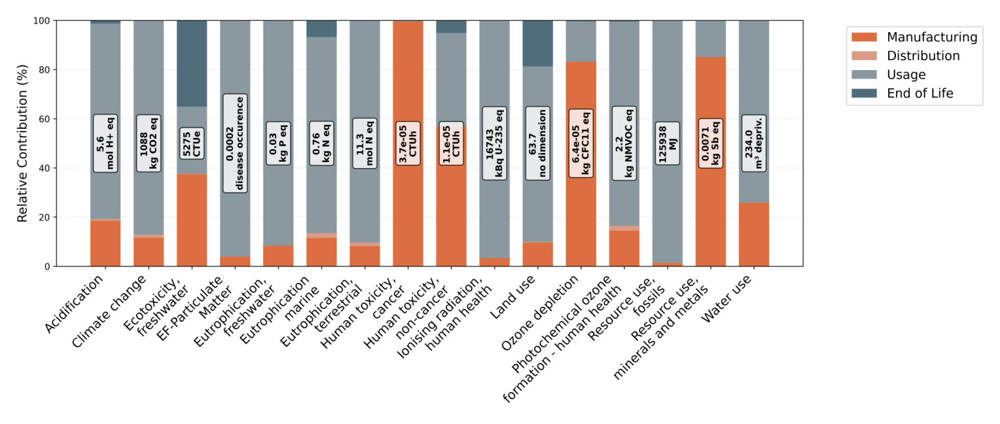
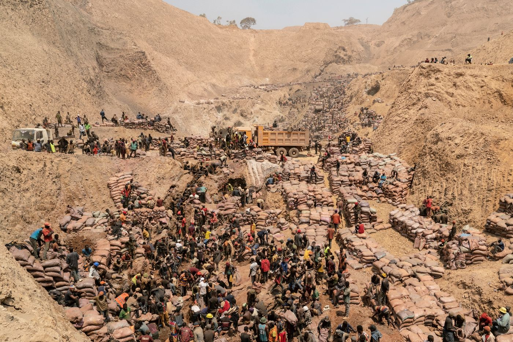
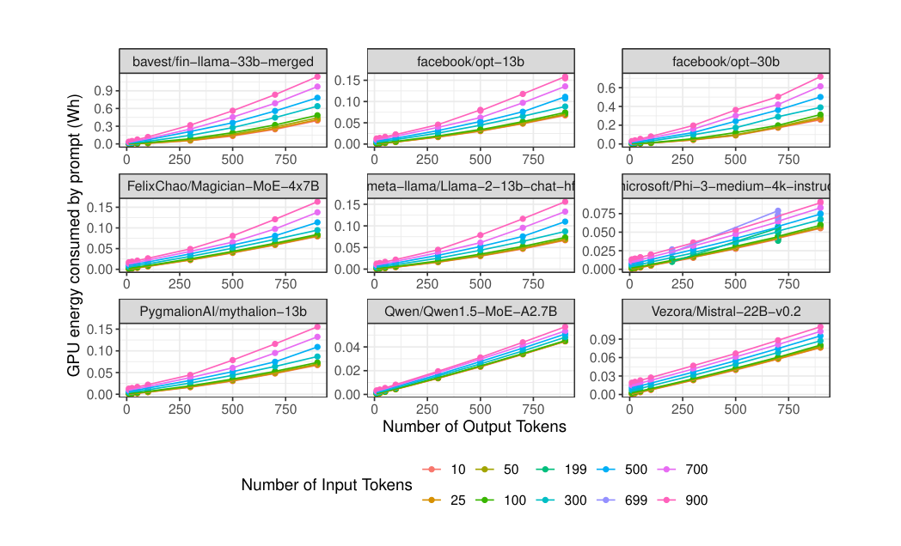
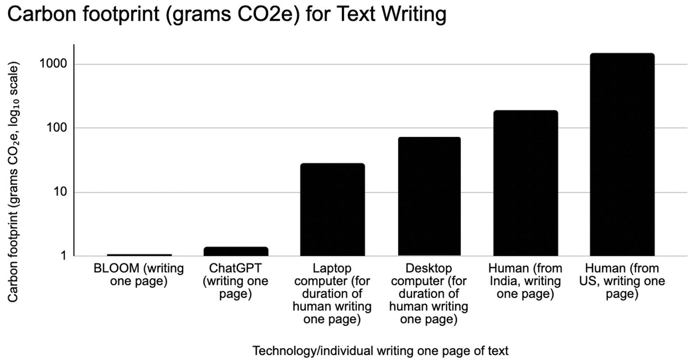
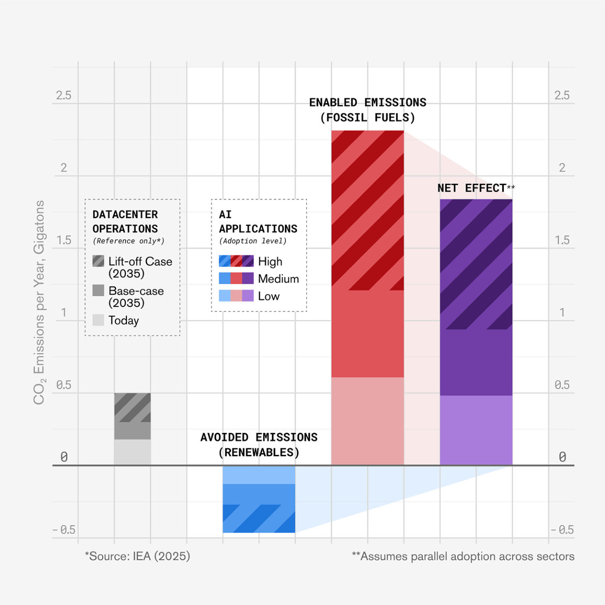

Une semaine de développeur remplacée par un run d'agent de 5 minutes : meilleur pour l'environnement ?
Objectif : utiliser l'IA générative en connaissance de cause
Ce que ça coûte
→
Ce à quoi ça se mesure
→
Ce que vous pouvez mesurer
2
Où se situe physiquement l'empreinte d'un modèle ?
L'empreinte de l'IA s'étale sur quatre ressources : électricité, eau, matériel, sol
Fabrication
matériel · eau · sol
→
Entraînement
électricité · eau · matériel
→
Inférence
électricité · eau
→
Fin de vie
sol · matériel
La fin de vie est l'étape que la plupart des ACV omettent.
Berthelot et al. 2024, Estimating the environmental impact of Generative-AI services using an LCA-based methodology Falk et al. 2025, More than Carbon: Cradle-to-Grave environmental impacts of GenAI training on the Nvidia A100 GPU
La consommation électrique des datacenters croît plus vite que les gains d'efficacité
The Shift Project 2025, Intelligence artificielle, données, calculs : quelles infrastructures dans un monde décarboné ? Luccioni et al. 2024, Power Hungry Processing: Watts Driving the Cost of AI Deployment?
L'eau se consume en trois endroits
Refroidissement datacenter
Refroidissement des centrales
Eau ultra-pure pour puces
4,2-6,6 milliards de m³d'eau pour l'IA d'ici 2027, soit 4-6 Danemark, la moitié du Royaume-Uni
Les datacenters évaporent 1-9 L par kWh d'énergie serveur
1 datacenter sur 4 est déjà en zone de déficit d'eau au moins un mois par an, en concurrence avec l'eau potable et l'irrigation.
Li et al. 2025, Making AI Less 'Thirsty': Uncovering and Addressing the Secret Water Footprint of AI Models Elsworth et al. 2025, Measuring the environmental impact of delivering AI at Google Scale Rosa et al. 2026, One Quarter of Global Data Centers are Located in Water-Stressed Areas, Environ. Sci. Technol.
La fabrication : toxicité et épuisement minéral
99 %de l'impact toxicité humaine (cancer) de l'A100 SXM vient de la fabrication

Contribution des étapes du cycle de vie par catégorie d’impact, GPU A100 SXM
Falk et al. 2025, More than Carbon: Cradle-to-Grave environmental impacts of GenAI training on the Nvidia A100 GPU, fig. 3
La fabrication commence dans des mines

Creuseurs de la mine artisanale de cobalt de Shabara, près de Kolwezi (RDC) : 76 % du cobalt mondial y est extrait
Photo : Junior Kannah / AFP, 12 octobre 2022, mine artisanale de Shabara près de Kolwezi (via La Croix) U.S. Geological Survey, Mineral Commodity Summaries, janvier 2025 Amnesty International & Afrewatch 2016, « This Is What We Die For » : Human Rights Abuses in the DRC Power the Global Trade in Cobalt
Quatre ressources, un multiplicateur : l'usage
3
Combien coûte réellement chaque usage ?
Requête Google vs requête LLM : une comparaison populaire, et pourquoi elle est contestée
estimations 2009-2023
0,3 Wh par recherche Google (auto-estimation de 2009, jamais re-mesurée) vs 2,9 Wh par requête ChatGPT : ×10
mesures 2025
0,24 Wh par prompt Gemini (Google, production) · ~0,3 Wh par requête GPT-4o (Epoch AI)
de Vries 2023, The growing energy footprint of artificial intelligence Elsworth et al. 2025, Measuring the environmental impact of delivering AI at Google Scale
La longueur du prompt est secondaire ; la longueur de la réponse pilote le coût

L'énergie croît quasi linéairement avec les jetons de sortie, et bien plus qu'avec les jetons d'entrée : contexte long bon marché, générations longues non.
Caravaca et al. 2025, From Prompts to Power: Measuring the Energy Footprint of LLM Inference Husom et al. 2024, The Price of Prompting: Profiling Energy Use in LLM Inference
Une image coûte ≈ 60× une requête texte, une vidéo courte ≈ 30× une image
l'effort du prompt est le même pour les trois : ce qu'il génère fixe le prix · longueurs de barres en échelle logarithmique, non à l'échelle
≈ 60× le texte
≈ 90 Wh, soit ≈ 30× l'image
la génération de vidéo : coût ≈ quadratique en résolution et en durée
Luccioni et al. 2024, Power Hungry Processing: Watts Driving the Cost of AI Deployment? Delavande et al. 2025, Video Killed the Energy Budget: Characterizing the Latency and Power Regimes of Open Text-to-Video Models
Un run d'agent multiplie le coût de la requête par le nombre de tours
13×l'énergie par requête : requêtes 15× plus longues
Oviedo et al. 2025, Energy Use of AI Inference: Efficiency Pathways and Test-Time Compute
Les sessions multi-agents se ramifient : N sous-agents × M tours, et le framework coûte jusqu'à 9,4×
9,4×AutoCodeRover a consommé 9,4× l'énergie d'OpenHands sur les mêmes tâches
La multiplication se compose : l'architecture est le premier facteur énergétique, avant la taille des modèles.
Tripathy et al. 2025, SWEnergy: An Empirical Study on Energy Efficiency in Agentic Issue Resolution Frameworks with SLMs Oviedo et al. 2025, Energy Use of AI Inference: Efficiency Pathways and Test-Time Compute
En une requête : 2,7 % des issues résolues. En boucle d’agent : 18 %
Qualitéissues SWE-bench Lite résoluesCoûtpar tâche
Requête unique2,7 % (recherche puis réponse)0,13 $
Agent en boucle18,0 % (même modèle)1,67 $
Multi-agentsgains croissant avec la difficultése compose : N × M tours
La qualité suit l’architecture, mais les rendements décroissent avec le nombre d’appels.
Yang et al. 2024, SWE-agent: Agent-Computer Interfaces Enable Automated Software Engineering, NeurIPS Li et al. 2024, More Agents Is All You Need, TMLR Chen et al. 2024, Are More LLM Calls All You Need? Towards Scaling Laws of Compound Inference Systems
Petits modèles vs grand modèle : 60-70 % d'énergie économisée à précision égale sur les tâches routinières
SLMpetits modèlesLLMgrand modèle
Qualitéégale sur le routinier, chute sur le raisonnement abstraitstable, y compris sur le raisonnement difficile
Énergie & eau60-70 % de moinsréférence
Latenceréponse plus rapideréponse plus lente
Sundaram et al. 2025, AI's Environmental Cost: Comparing Resource Consumption Between SLMs and LLMs Across Queries Tripathy et al. 2025, SWEnergy: An Empirical Study on Energy Efficiency in Agentic Issue Resolution Frameworks with SLMs
4
Un logiciel moins cher : plus écologique, ou pas ?
À l'échelle de la tâche, le run assisté par IA émet 1 000× moins qu'un humain (États-Unis)

CO₂e par page de texte, échelle log (figure 1 de l’article, CC BY 4.0)
1 400 g vs 1,35 gCO₂e pour écrire une page (humain, États-Unis vs ChatGPT) · illustrer une image : 5 500 g vs 2,2 g
Tomlinson et al. 2024, The carbon emissions of writing and illustrating are lower for AI than for humans Cook et al. 2025, Beyond Counting Carbon: AI Environmental Assessments Struggle to Inform Net Impact Decisions
À périmètres alignés, la réanalyse inverse le classement
CO₂e par page écrite
humain
IA
étude d’origine
1 411 g
1,4 g
réanalyse, périmètres alignés
9,3 g
11,7 g
réanalyse : bottom-up des deux côtés, matériel inclus, l’humain reste présent dans le scénario assisté (cadre EGDC)
La comparaison par tâche confronte deux produits. Une décision pose une autre question : l’écriture assistée remplace la pratique, ou s’y ajoute ?
Les effets indirects qui décident de l’impact net restent hors périmètre.
Trois formes de rebond :direct : moins cher/appel → plus d’appelsindirect : l’IA remplace des pratiques → de nouveaux usagestemporel : les économies d’aujourd’hui → l’échelle de demain
Cook et al. 2025, Beyond Counting Carbon: AI Environmental Assessments Struggle to Inform Net Impact Decisions (working paper, ETH Zurich) Ren et al. 2024, Reconciling the contrasting narratives on the environmental impact of large language models Luccioni et al. 2025, From Efficiency Gains to Rebound Effects: The Problem of Jevons' Paradox in AI's Polarized Environmental Debate (ACM FAccT)
L'impact indirect passe par la production logicielle elle-même
Un développement moins chereffet d'offre
→
Plus de logiciel produiteffet d'usage
→
Plus de calcul exécuté
The Shift Project 2025, Intelligence artificielle, données, calculs : quelles infrastructures dans un monde décarboné ? Ekchajzer et al., From Attributional to Consequential LCA: Which Theoretical Framework for Assessing AI's Environmental Impacts?
L’économie par tâche ne devient un gain global que si le nombre de tâches reste fixe
émissions du parc = émissions par tâche × nombre de tâches : la comparaison par tâche ne fixe que le premier facteur
À volume constant
le scénario comptable : autant de tâches qu’avant, l’économie par tâche se retrouve au niveau du parc (une année, tout le logiciel exécuté)
Quand produire devient moins cher
ce qui arrive en pratique : le même total du parc, où l’inférence unitaire baisse mais plus de logiciel est produit et exécuté
Une grande partie de la demande est créée par les choix de conception
10×recherche
IAchat
IAphotos
IAvidéo
IAcode
IAvoix
des fonctions IA ajoutées par défaut sur les outils du quotidien
« Le développement des réseaux ne vise pas à servir une demande préexistante : c’est lui qui stimule cette demande. »Morand et al. 2026, à propos du déploiement de la 5G · même logique pour les modèles de ML
Morand et al. 2026, When rebound effect is not a side effect: analyzing sociotechnical contexts of digital technologies Morand, Ligozat & Névéol 2025, The Environmental Impacts of Machine Learning Training Keep Rising, Evidencing Rebound Effect de Vries 2023, The growing energy footprint of artificial intelligence
Même en décarbonant l’électricité, les émissions des centres de données font ×2,5 à ×3,7 d’ici 2030
intensité carbone de l’électricité constanteélectricité : scénario Stated Policies (AIE, WEO 2024)cible climat : −45 % de GES entre 2020 et 2030 (SBTi)
920MtCO₂e/an en 2030, deux fois les émissions annuelles de la France
« Les trajectoires de déploiement actuelles sont donc incompatibles avec la double contrainte carbone, qu’importe les progrès technologiques »
The Shift Project 2025, Intelligence artificielle, données, calculs : quelles infrastructures dans un monde décarboné ?
Les émissions activées par les gains IA dépassent celles qu’ils évitent
optimisation du réseau électrique
découverte de matériaux et de batteries
prévision météo
gestion énergétique des bâtiments

émissions évitées (bleu : gains IA sur les renouvelables) contre émissions activées (rouge : gains IA sur les fossiles) ; en violet, l’effet net de l’adoption parallèle
Des requêtes comparables varient d'un facteur 70 en énergie mesurée
0,43 Wh requête courte GPT-4o vs 33+ Wh prompt long o3 / DeepSeek-R1
Jegham et al. 2025, How Hungry is AI? Benchmarking Energy, Water, and Carbon Footprint of LLM Inference
Une requête de texte coûte 0,24 à 4 Wh, dominée par la réponse
0,24 Whprompt Gemini médian, mesuré en production · jusqu'à 3,96 Wh pour un « write an email » non optimisé (calculateur EcoLogits)
≈ 10 % de l'énergie
≈ 90 % de l'énergie
Ce que mesurent les barres : la part de l'énergie d'une requête, prompt vs réponse · proportions schématiques (non mesurées) : la réponse domine
Elsworth et al. 2025, Measuring the environmental impact of delivering AI at Google Scale Jegham et al. 2025, How Hungry is AI? Benchmarking Energy, Water, and Carbon Footprint of LLM Inference